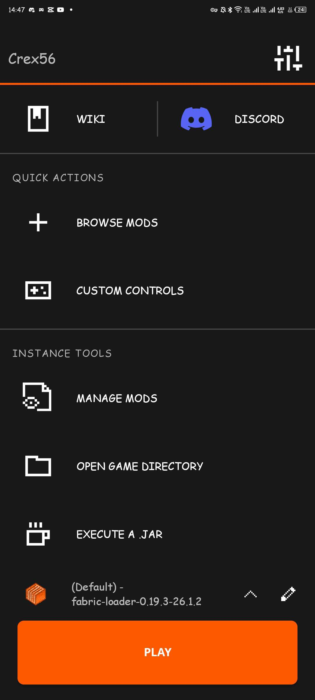
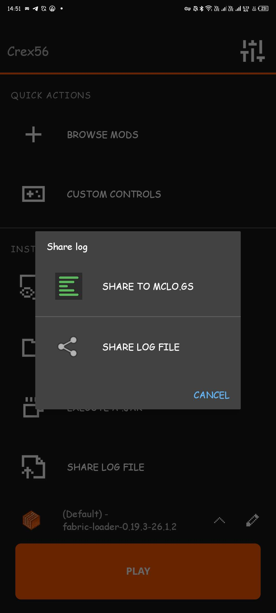
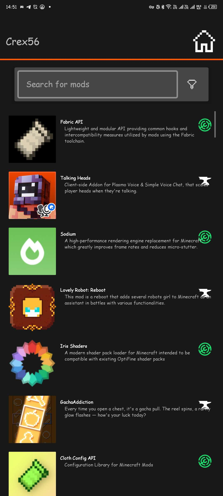
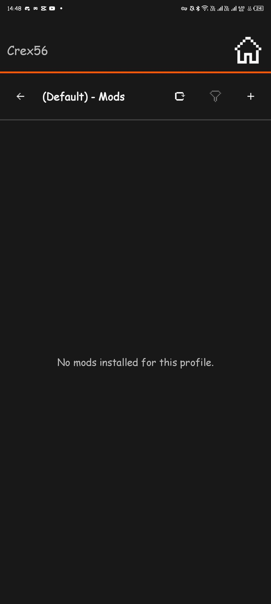
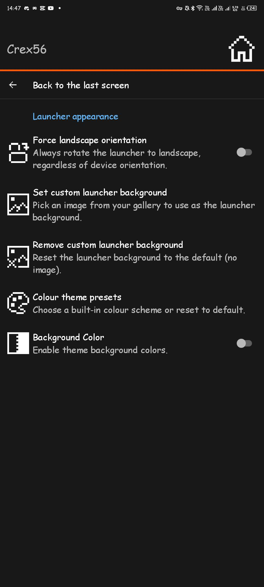

Introduction
- Copper is a Minecraft: Java Edition launcher for Android based on Boardwalk, PojavLauncher and Amethyst Launcher.
- This launcher can launch almost all available Minecraft versions ranging from rd-132211 to 26.x snapshots (including Combat Test versions)
- Modding via Forge, Fabric, Neoforge & Quilt are also supported.
Key Features
- Customizable UI: Custom Background, custom colour themes & landscape mode.
- Better Log Sharing: Upload your log file directly from Copper to mclo.gs.
- Browse Content: Easily download, configure & update mods, resource packs & shader packs from Modrinth & Curseforge!
Screenshots




